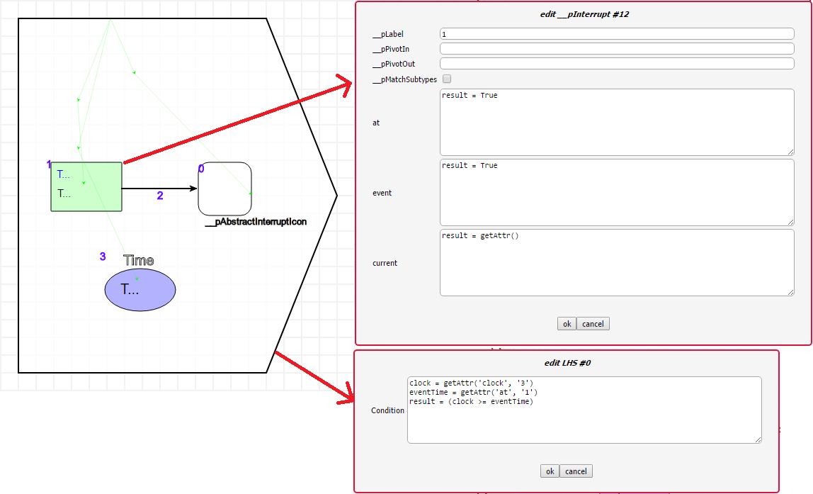
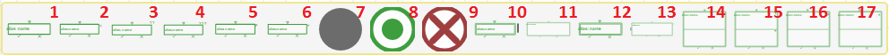

Modelling a Model Transformation¶
A model transformation consists of a set of rules that match and rewrite parts of the model, and a schedule that governs the order in which rules are executed. In the next subsections, we explain how to create these elements. In Executing a Model Transformation, we explain how to execute the modelled transformation.
In this section, we make use of the TransformationEditor toolbar:

Compiling a Language to a Pattern Language¶
A prerequisite to modelling rules is to compile the language of the models you want to transform to a pattern language. This pattern language is used in the rules you model, and is very similar to the original language. This makes modelling the patterns very intuitive (since almost the same syntax is used), while changing the language to accomodate the matching and rewriting process.

To compile a language to a pattern language, press the third button on the CompileMenu toolbar. Navigate to the abstract syntax metamodel you want to compile:

Pressing the ‘ok’ button will create the abstract syntax metamodel TrafficLight.pattern.metamodel and the formalism toolbar TrafficLight.defaultIcons.pattern.metamodel in the /Formalisms/TrafficLight user folder. This formalism is used alongside The Rule Language to model the rules of the model transformation. The pattern language differs from the original language in three ways:
- Its constraints are relaxed. More precisely, abstract classes in the original language are made concrete, and minimum cardinalities are removed.
- Elements in the language are augmented with four attributes: __pLabel, __pMatchSubtypes, __pPivotIn, and __pPivotOut. We will only use the two first ones. __pLabel is used to identify elements across LHS/RHS/NAC patterns, and __pMatchSubtypes indicates that instances of subclasses should also be matched.
- The type of the attributes of each element is changed to code. This allows to model constraints in LHS/NAC patterns on the values of the attributes in the host model and actions in RHS patterns to compute the new values of the attributes after rewriting.
Warning
Constraint and action code in patterns is written in Python!
Initializing Schedules/Rules¶
A formalism created with the “new formalism” button on the MainMenu toolbar (see Overview) comes initialized with two schedules: OperationalSemantics/T_OperationalSemantics.model and TranslationalSemantics/T_TranslationalSemantics.model. These can be used to model the schedule of the formalism’s operational semantics (a simulator) and translational semantics (a mapping onto a domain with known semantics), respectively.
If you want to initialize a new schedule, use the fourth button on the TransformationEditor toolbar. This will present you with a file browser, which allows you to choose a location and a name for the schedule. The schedule will automatically open in a new AToMPM instance.
Note
A schedule’s name has to start with the T_ prefix!
If you want to initialize a new rule, use the fifth button on the TransformationEditor toolbar. This will present you with a file browser, which allows you to choose a location and a name for the rule. The rule will automatically open in a new AToMPM instance.
Note
A rule’s name has to start with the R_ prefix!
The Rule Language¶
When creating a rule, it is initialized with the three basic components of every rule: a Negative Application Condition (NAC), a Left-Hand-Side (LHS), and a Right-Hand-Side (RHS).

In general, a rule has to have exactly one LHS, exactly one RHS, and zero or more NACs. The LHS is used to match a pattern in the host model. It is a positive application condition: if the pattern is found in the host model, the rule can be applied. If the pattern in one of the NACs is found, however, the rule is disabled. The RHS is used to rewrite the pattern in the host model.
To model the patterns, we need to load the pattern language we compiled earlier. Press the third button on the TransformationEditor toolbar. Navigate to your pattern metamodel:

This will load the formalism toolbar of the pattern language for use in LHS, RHS, and NAC patterns.
LHS and NAC¶
The LHS and NACs are so-called precondition patterns. When a rule is selected for execution, it will try to find a match in the host model for the LHS. If one is found, it will try to match all the NACs. If a match is found for one of them, the rule is not executed.
In the example LHS above, we try to find the current interrupt in the interrupt list, but only if the clock has advanced to a point in time after or equal to the time specified in that interrupt. To do this, we model:
- An instance of __pInterrupt (with label ‘1’). Each attribute has to assign a boolean value to the ‘result’ variable, indicating whether the instance can be matched based on the value of the attribute. The current value can be accessed using the getAttr() function. For a complete overview of functions that can be called from action and condition code in patterns, see Action Library. In our example, we only want to make sure the current attribute is True. We set all conditions to result = True (the default), except for the current attribute, where we require result = (getAttr() == True) – or, more simply, result = getAttr().
- An instance of the AbstractInterrupt, connected to the first interrupt. We instantiate the abstract class here, because potentially, it is the end of the list, and we want to make sure to match both normal interrupts and end interrupts.
- The Time instance (which we know is a singleton).
The condition that the clock needs to have advanced beyond the time specified in the current interrupt cannot be modelled as a condition on one single attribute, since it spans multiple instances (the Time instance and the first Interrupt instance). A precondition pattern also allows a global condition, which needs to be satisfied in order for the pattern to match. In this case, we get the current time, the event time, and compare them. Again, the resulting boolean is assigned to the variable result.
When executing the transformation, AToMPM will try to find a match for each of the pattern elements. If one is found, it will map each __pLabel value to a matched element:
{
'0': <AbstractInterrupt Instance>
'1': <Interrupt Instance>
'2': <Next Instance>
'3': <Time Instance>
}
This is called a binding. AToMPM will find as many matches as possible. This results in a match set.
RHS¶
The RHS is the postcondition pattern. It specifies how the elements matched by the LHS should be rewritten. In general:
- Elements in the RHS with a __pLabel that cannot be found in the LHS are created.
- Elements in the LHS with a __pLabel that cannot be found in the RHS are deleted.
- Elements in the RHS with a __pLabel that can be found in the LHS are updated according to the actions modelled in the RHS.
The task of the right-hand side of our rule is to change the current interrupt to the next one. The result attribute now should get the new value of the attribute. If nothing needs to change, one can simply write result = getAttr(). In this case, the current attribute of the first interrupt is changed to False, while the current attribute of the second interrupt is changed to True. The rest of the attributes remains unchanged. For a complete overview of functions that can be called from action and condition code in patterns, see Action Library.
The MoTif Scheduling Language¶
Rules are scheduled using a scheduling language. We use MoTif, which exposes a number of primitives, or steps. A schedule consists of a number of steps starting at the Start pseudostep and ending in either a EndSuccess or EndFail pseudostep. Each step is connected to two other steps with a success or a fail link. Depending on the type of step, the referenced rule(s) are executed in a particular way. The steps exposed by MoTif are:
- ARule: Atomic rule. Executes the rule for one match found. If no matches are found, it fails.
- QRule: A query. Succeeds if the LHS matches and the NACs do not match. The RHS of the rule is ignored.
- Unused.
- Unused.
- FRule: For-all rule. Executes the rule for each match in the match set. It fails if no matches can be found.
- SRule: Sequence rule. Executes the rule until no more matches can be found. It fails if no matches can be found.
- Start: The start of the schedule. Can only appear once.
- EndSuccess: The end of the schedule (indicating success). Can occur more than once, but the schedule ends when one of them is reached.
- EndFail: The end of the schedule (indicating failure). Can occur more than once, but the schedule ends when one of them is reached.
- Sequence: Executes the referenced transformation until it fails.
- BRule: Allows for other steps to be nested. Executes (non-deterministically) one of the succeeding child steps.
- CRule: Nested transformation. The referenced transformation schedule is executed once.
- BSRule: Executes (non-deterministically) one of the succeeding child steps until none of them succeeds.
- Unused.
- Unused.
- Unused.
- Unused.
Action Library¶
Note
The _id attribute can either be an abstract syntax identifier, or a __pLabel value.
| name | parameters | Description |
|---|---|---|
| getAttr(_attr[, _id]) |
|
Return the value of the given attribute from the given entity, specified via its abstract syntax identifier or __pLabel. If no such attribute exists, the current constraint, action, mapper, or parser is immediately interrupted and an error is presented to the user. |
| hasAttr(_attr[, _id]) |
|
Returns true if the given entity, specified via its abstract syntax identifier or __pLabel, has an attribute named attr, false otherwise. |
| getAttrNames(_id) |
|
Return all attribute names of the given entity, specified via its abstract syntax identifier or __pLabel. |
| getAllNodes(_fulltypes) |
|
Return the abstract syntax identifiers of all entities whose types are contained within the fulltypes array. If it is omitted, return the abstract syntax identifiers of all entities. The notion of full types is best explained by example: the full type of a SimpleClassDiagram.Class entity is “/Formalisms/__LanguageSyntax__/SimpleClassDiagram/SimpleClassDiagram/Class”. |
| getNeighbors(_dir[, _type, _id]) |
|
Return neighbours of the given entity, specified via its abstract syntax identifier or __pLabel. The _dir parameter can take on three values: “in” implies that only inbound neighbours should be returned, “out” implies that only outbound neighbours should be returned, “*” implies that neighbours in either direction should be returned. Finally, the _type parameter can be set to indicate that only neighbours of the given full type should be returned. The notion of full types is best explained by example: the full type of a SimpleClassDiagram.Class entity is “/Formalisms/__LanguageSyntax__/SimpleClassDiagram/SimpleClassDiagram/Class”. To match any type, use “*”. |
| print(msg) |
|
Print the given string to the console that launched the AToMPM back-end. |
| setAttr(_attr, _val[, _id]) |
|
Update the given attribute of the given entity, specified via its abstract syntax identifier, to the given value. Note that this function is only available from within meta-modelling actions. Also, beware the fact that calls to setAttr() are not treated like normal model updates (i.e., they do not trigger pre-editing constraints and post-editing actions). |
| httpReq(method, host, url, data) |
|
Perform a synchronous HTTP request given an HTTP method (GET, PUT, POST or DELETE), a URL and a key-value dictionary of parameters. If host is undefined, the request is automatically routed to the AToMPM backend. This can be useful to make use of the Remote API from within rule code. |
| isConnectionType(_id) |
|
Return true if the given entity, specified via its abstract syntax identifier or its __pLabel, is a connection type, false otherwise. |
| session_get(_key) session_put(_key, _val) |
|
The Transformation Session is a sandbox of sorts that enables miscellaneous user data to be easily accessed and stored across several rule and transformation executions. It is only ever cleared when a transformation is (re-)loaded. These methods respectively enable retrieving and setting/updating a stored value. |
| sys_call(_args) |
|
Perform a system call on the machine hosting the AToMPM back-end. An example value for the _args parameter is [“ls”, “-l”]. |
| sys_mkdir(_path) |
|
Create the given directory (or directories). |
| sys_readf(_path) |
|
Return the contents of the given file. |
| sys_writef(_path, _content, [_append]) |
|
Write content to the given file, overwriting its contents if the append attribute is set to false. |
TrafficLight Example¶
As an example, let’s model the operational semantics of the TrafficLight language. The requirements are:
First, the global time is initialized to 0. Then, the current state is made to refer to the start state of the model. Then, the simulation continues until no more state transitions are possible.
- A state transition T from the current state C to a new state (possibly the same) N occurs:
- If there is a timed state transition T from the current state C to a new state (possibly the same) N, this transition will be taken if the global time + the time delay of the transition is strictly smaller than the time of the earliest interrupt notice in the external interrupt list (if any is present: the interrupt list may be empty). Combined with the description of the interrupt transition below, the strictly smaller required will ensure that an external interrupt takes priority over a timed transition, if they happen to occur at exactly the same time (a so-called event collision). The effects of this state transition are:
- The global time is updated to the global time + the time delay of the transition
- The current state is updated to state N
- If there is an interrupt transition from the current state C for which the interrupt name is equal to the interrupt name in the earliest interrupt notice in the external interrupt list. The effects of this state transition are:
- The global time is updated to the time in the interrupt notice
- The current state is updated to state N
- The interrupt notice is removed from the interrupt list

The first step in the initializes the simulation: it looks for the initial state and makes it the current state. Then, it tries executing a timed transition. If it fails, it tries executing an interrupt. At the end, the next interrupt is chosen if the time has advanced sufficiently.

The rules are shown above. Most of them do not change the structure of the model, and most of the computation is done in the actions and constraints of the patterns.